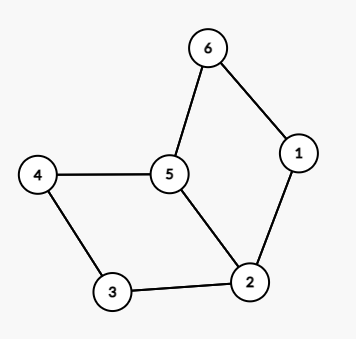
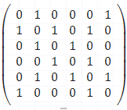
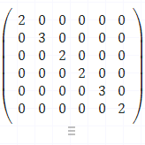
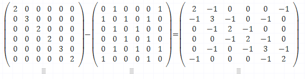
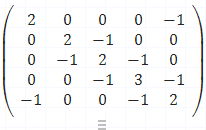
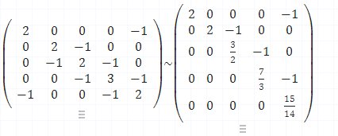

本文章着重讲如何根据无向图计算出它的生成树个数，但不会讲实现原理，也就是不会论证。
能看懂本文章的基本要求
0、知道什么是无向图
1、知道什么是生成树
2、知道如何根据矩阵算出下三角矩阵
3、知道余子式
例题
假设现在有一个题目，要求计算出该无向图的生成树个数。

对于求解无向图生成树个数问题，我们可以分成两类。
第一类
也是最简单的一类，即给了你一个完全图，让你求它的生成树个数，我们知道一个**完全图（即每个点和其他点都有边相连）的生成树个数为n^(n-2)**，n为顶点数，所以对于这类问题，直接通过公式算出。
第二类
这一类则比较复杂，如果简单点的可能通过肉眼就能判断出来，但是对于上图很难通过肉眼直接判断出生成树的个数到底有多少个，对于这类问题，我们需要使用拉普拉斯矩阵(Laplacian matrix)也叫做基尔霍夫矩阵（并不可怕，请不要被吓到）。
拉普拉斯矩阵的定义为L = D - A，L的任意余子式即为无向图的生成树个数。
拉普拉斯矩阵：L = D - A
A
其中A为邻接矩阵，我们以下面截图为例子，第一行为0，1，0，0，0，1，代表的是顶点1和顶点2、顶点6相连的意思。

D
D即把每一列的数字相加，然后把列总和放到对角线上，然后让其他位置变为全0，它也称之为度矩阵，对角线上代表每个顶点的度数。

根据公式:L = D - A

余子式（我们选择去掉第2行第2列）

然后计算出下三角

结果
我们把对角线上的数字相乘后，就能得出该无向图生成树个数为15。
一些或许有帮助的网址
自定义生成图：https://csacademy.com/app/graph_editor/
矩阵计算：https://matrixcalc.org/zh/
生成树概念+矩阵代码：https://blog.csdn.net/qq_40438165/article/details/88526546
拉普拉斯矩阵：https://www.cnblogs.com/pupil-xj/p/11714407.html